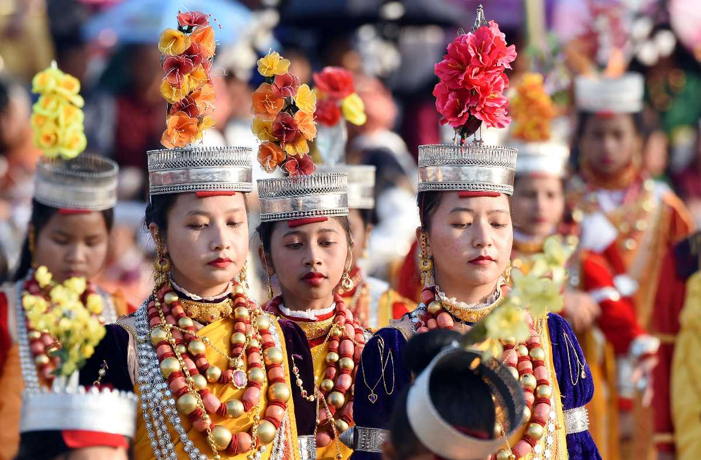

Jainkup
Elderly women from the Jaintia clan wear this full-sleeve blouse woolen outfit. This attire is uniquely designed with remarkable lace embroidery all over the neck region. Accessories matching up the traditional dress include red coral and white beads covered with foil, silver or golden crown paired with elegant golden earrings. Many women dancers wear this fabulous attire while performing their traditional art form onstage during the Khasi Festival.